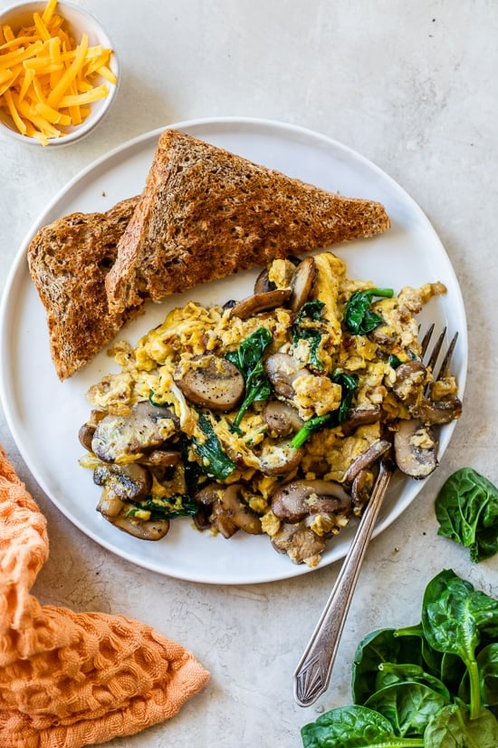

Mushroom Scramble

This is a Mushroom Scramble recipe I found on skinnytaste.com.
It includes mushrooms, spinach, and some delicious cheese!
Ingredients
- 1/2 tbsp olive oil
- 1/4 cup onions
- 1 1/2 cups thin sliced mushrooms
- 1/2 cup fresh baby spinach
- 2 large eggs
- 1 large egg whites
- 1 teaspoon water
- kosher salt and black pepper
- 2 tablespoons cheese such as gruyere, cheddar or DF cheese, (optional)
Steps
- In a small bowl, whisk eggs, egg white, 1 tablespoon water, 1/8 tsp salt and pepper until blended.
- In a medium nonstick skillet, heat oil over medium heat.
- Add onions and cook until tender and golden, 3 to 4 minutes.
- Add the mushrooms and cook and stir 3-4 minutes or until tender. Add spinach; cook and stir until wilted.
- Add egg mixture; cook and stir just until eggs are thickened and no liquid egg remains. If you want to add cheese, add it with the eggs.